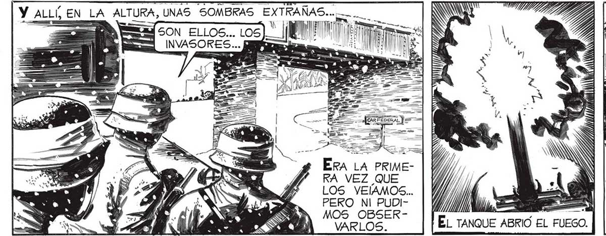
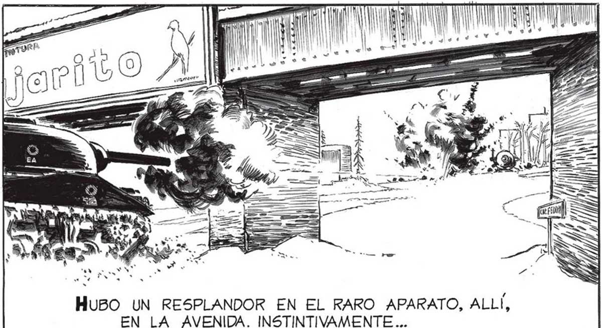
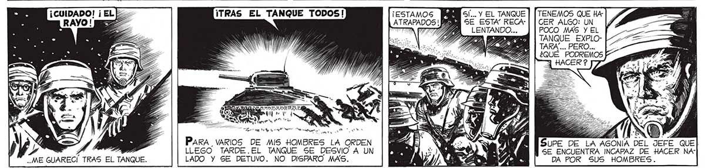
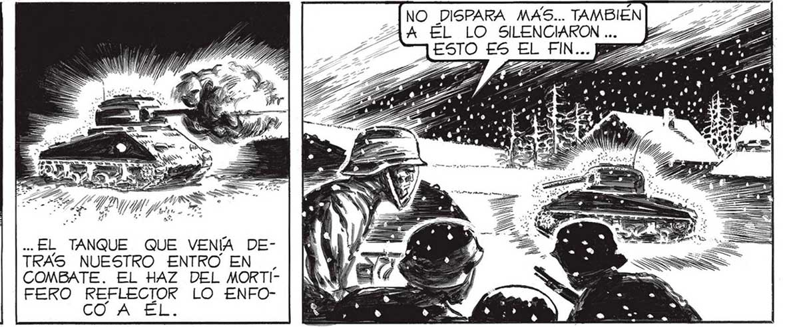

Y ALLÍ EN LA A a LTURA, UNAS SOMBRAS EXTRAÑAS... .. A WM E AS SON ELLOS... LOS) || e 1 | INVASORES... a == +. .* y RIMERA VEZ QUE LOS VEÑAMOS... PERO NI PUDIMOS OBSERVARLOS. ¡ESTAMOS ATRAPADOS !P CA PS, ON PARA VARIOS DE MIS HOMBRES LA ORDEN LLEGO TARDE.EL TANQUE SE DESVIO A UN ME GUARECI TRAS EL TANQUE. LADO Y SE DETUVO. NO DISPARO MAS. ¡AHÍ VIENE EL OTRO TANQUE ! .. EL TANQUE QUE VENÍA DEA TRAS NUESTRO ENTRO EN. ad = COMBATE. EL HAZ DEL MORTICoN EL CAÑON Y LA AMETRALLADORA DESCAR- FERO REFLECTOR LO ENFOGANDOSE A VELOCIDAD MAXIMA... CO A EL HuBO UN RESPLANDOR EN EL RARO APARATO, ALLÍ, EN LA AVENIDA. INSTINTIVAMENTE... SI... Y EL TANQUE SE ESTA” RECATENEMOS QUE HA: ZA, LENTANDO... CER ALGO: UN POCO MAS Y EL TANQUE EXPLO| | TARA... PERO... ll ¿QUÉ PODREMOS SUPE DE LA AGONIA DEL JEFE QUE SE ENCUENTRA INCAPAZ DE HÁCER NAr| DA POR SUS HOMBRES. NO DISPARA MAS... TAMBIEN A ÉL LO SILENCIARON ... ESTO ES EL FIN... 2



